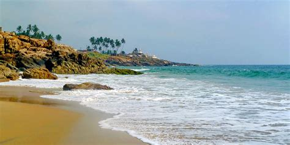
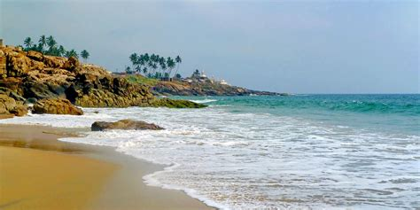

Welcome to Kerala - God's Own Country
Kerala, located in the southwestern part of India, is known for its serene backwaters, lush greenery, beautiful beaches, and vibrant culture. It is a popular destination for nature lovers and travelers seeking peace and tranquility.
Top Attractions in Kerala
- Alleppey Backwaters
- Munnar Tea Gardens
- Kovalam Beach
- Periyar Wildlife Sanctuary
- Wayanad Hills
Activities to Enjoy
Visitors can enjoy houseboat cruises, trekking, wildlife safaris, beach activities, and traditional Ayurvedic treatments.
Best Time to Visit
September to March is considered the best time to visit Kerala when the weather is pleasant.
Images of Kerala

 
